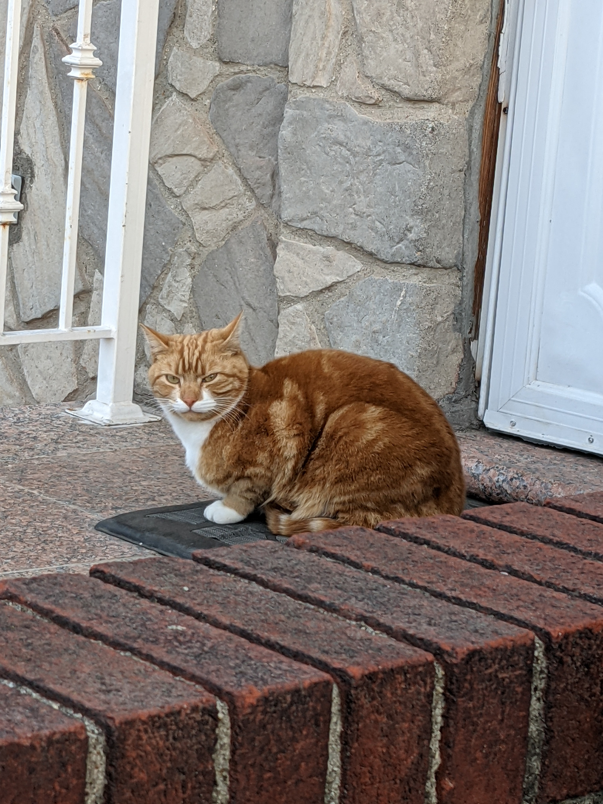

In this assignment. I created the Illustrated Environment using image of our neighborhood cat, Garfield. Photo was taken when he was sitting in front of my neighbor’s front door. I used pen tool with different tone of Triad color without outline to create shape of the environment. I used bright yellow for Garfield in comparison to the less saturated colors used for the background. This is to achieve focus on Garfield, just like cats standing out to cat lovers in real life. The background was also created with less detail in order to not pull attention from the viewers. I was trying to create something more surreal in the beginning, but unfortunately I was limited by the Triad color set. Eventually I had to settle with yellow, red, and blue hue.